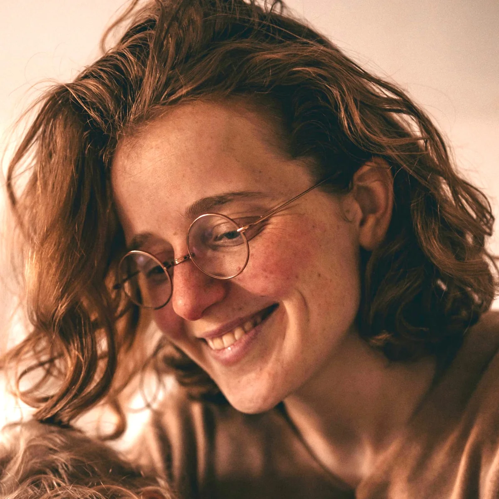
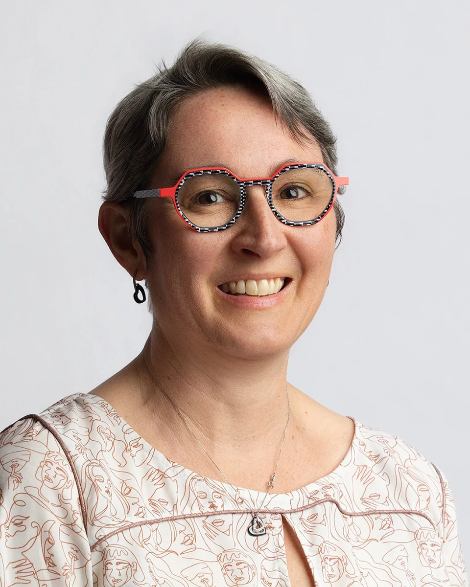
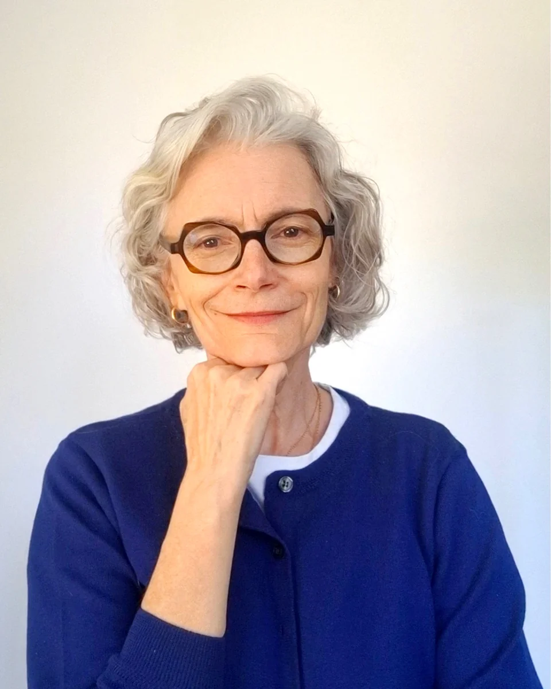
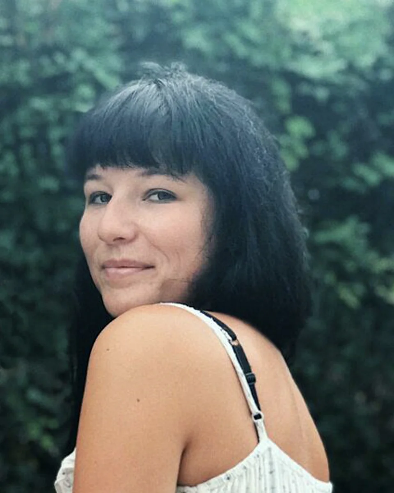
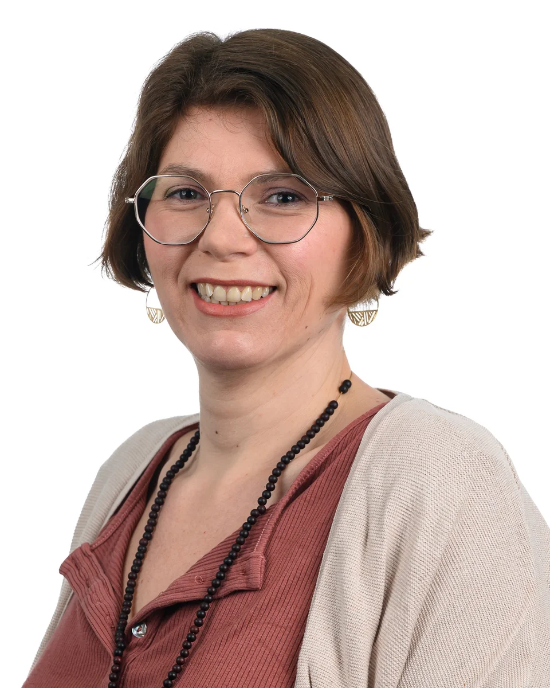
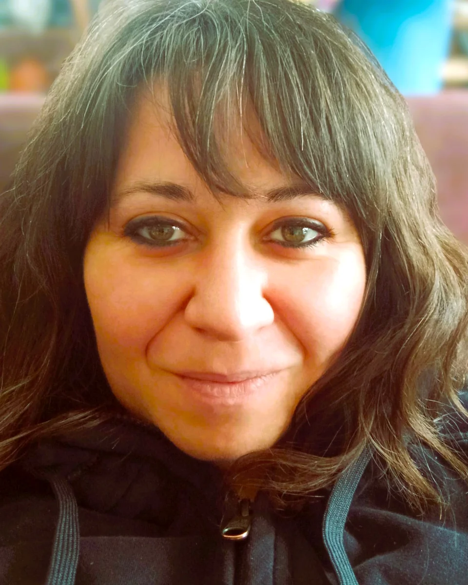
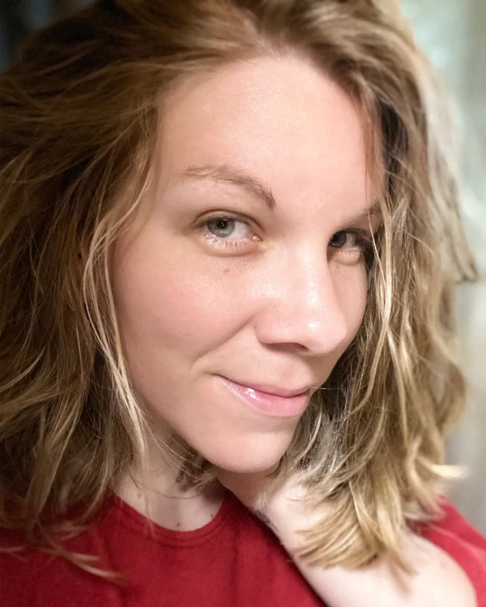
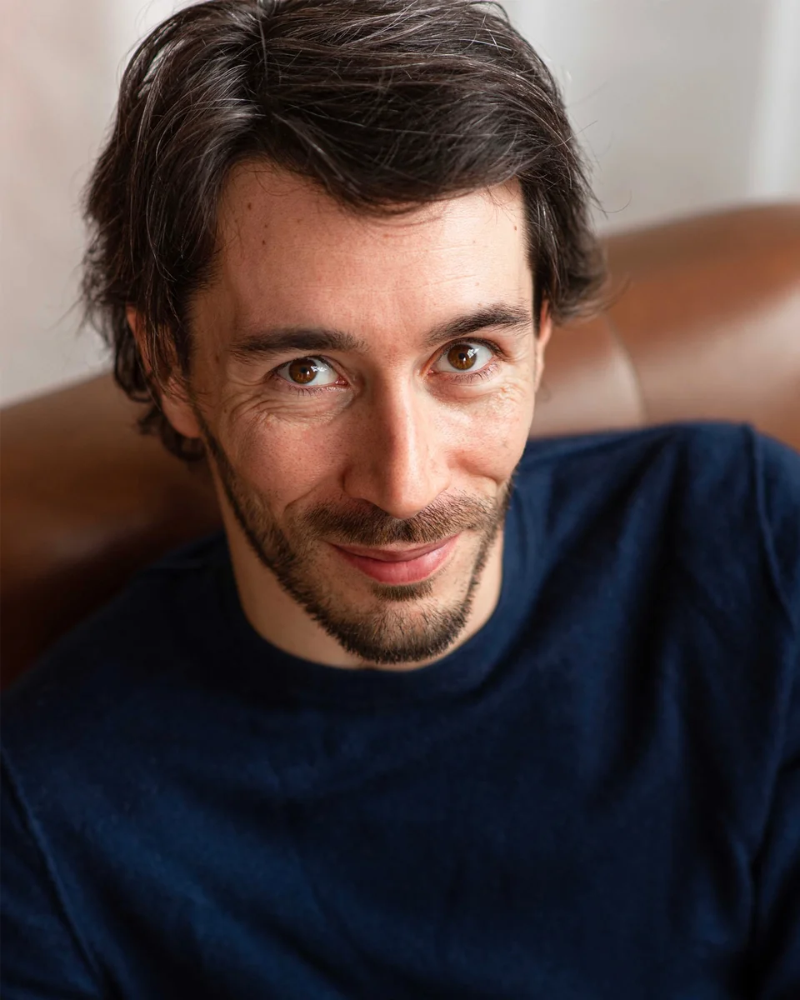
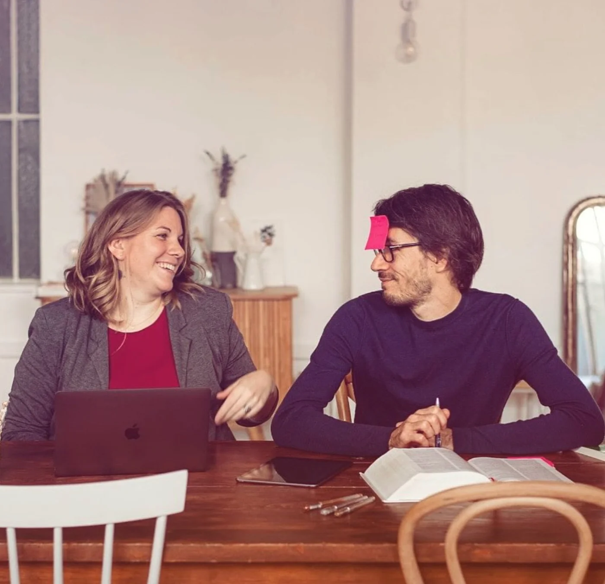
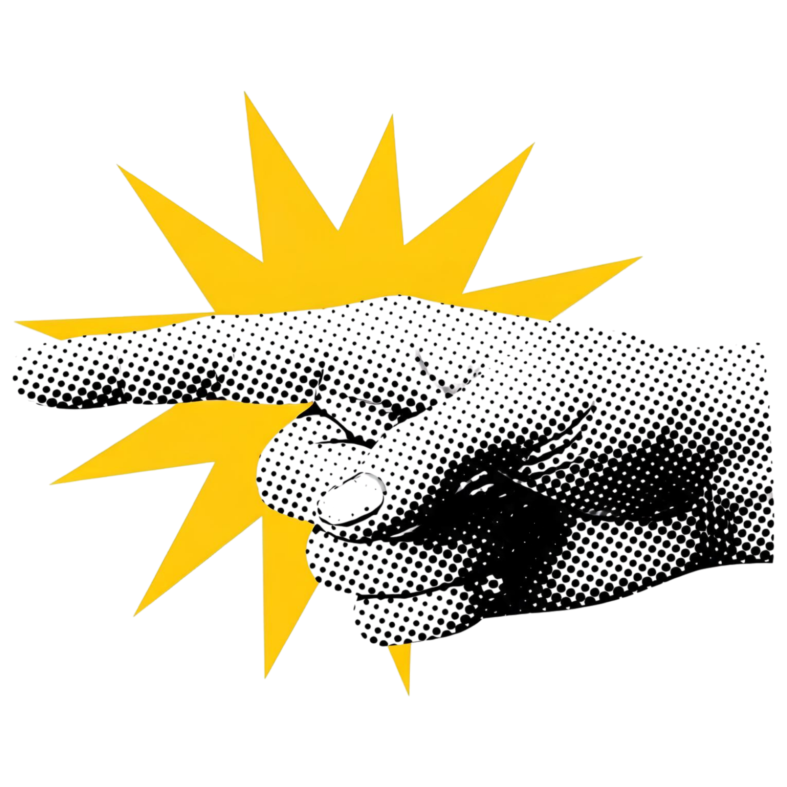

Charlie
Mentor
Soutient les élèves, répond à leurs questions et les accompagne au quotidien dans leur progression du début à la fin de la formation.
EN DEHORS DE BLOB ÉDITION
Correctrice éditoriale
Blob Édition · L’équipe
25 ans de métier cumulés – correction, édition, écriture, ghostwriting, lecture professionnelle, accompagnement d’auteurs.
Et, autour de nous, une équipe de correctrices (sur)qualifiées.
Donc, bon. On connaît un peu ce à quoi l’on vous forme. (Euphémisme.)

Mentor
Soutient les élèves, répond à leurs questions et les accompagne au quotidien dans leur progression du début à la fin de la formation.
EN DEHORS DE BLOB ÉDITION
Correctrice éditoriale

Mentor
Soutient les élèves, répond à leurs questions et les accompagne au quotidien dans leur progression du début à la fin de la formation.
EN DEHORS DE BLOB ÉDITION
Correctrice éditoriale

Tutrice
Fait le point avec les élèves aux grandes étapes de leur parcours afin de s’assurer qu’ils progressent dans les meilleures conditions.
EN DEHORS DE BLOB ÉDITION
Correctrice éditoriale

Animatrice · Communauté
Fait vivre la communauté privée Blob, favorise la création de lien et anime les échanges entre élèves.
EN DEHORS DE BLOB ÉDITION
Correctrice · Écrivain · Secrétaire de rédaction

Modératrice · Communauté
Participe à la vie de la communauté privée Blob et veille à ce qu’elle demeure un espace bienveillant et respectueux pour tous.
EN DEHORS DE BLOB ÉDITION
Correctrice éditoriale

Mentor
Soutient les élèves, répond à leurs questions et les accompagne au quotidien dans leur progression du début à la fin de la formation.
EN DEHORS DE BLOB ÉDITION
Correctrice éditoriale

Directrice pédagogique
Conçoit la formation, supervise la pédagogie et assure la cohérence et la qualité du parcours de formation.
AU SEIN DE BLOB ÉDITION
Fondatrice · Éditrice · Correctrice · Consultante littéraire · Bêta-lectrice · Coach d’auteurs · Ghostwriter

Directeur technique
Développe et gère le système de formation, assure la veille et la maintenance technique, et conçoit les outils du parcours de formation.
AU SEIN DE BLOB ÉDITION
Fondateur · Éditeur · Responsable de projets éditoriaux · Correcteur · Bêta-lecteur · Coach d’auteurs · Ghostwriter
Chez Blob Édition, on ne blague pas avec les livres (ni avec les élèves) – mentors, tutrice, animatrice, modératrice et fondateurs : chaque rôle est tenu par quelqu’un qui connaît le métier… et qui l’exerce.
On en a fait, des choses.
Nous avons exercé comme éditeurs, pour des maisons d’édition comme pour des auteurs particuliers. Nous avons été alpha- et bêta-lecteurs pour plusieurs centaines d’ouvrages, en avons retravaillé un bon nombre et avons accompagné leurs auteurs, en édition comme en auto-édition, dans l’écriture ou la réécriture de leurs textes.
Nous avons collaboré avec plus d’une trentaine de maisons d’édition — Eyrolles, Nathan, Vuibert, Flammarion, Leduc, Hachette, Michelin, First, Larousse, Fleurus… Nous avons écrit une bonne dizaine de livres, aussi – en tant qu’auteurs aussi bien que ghostwriters.
Et puis nous avons surtout corrigé plus d’un millier de livres — tous genres confondus, fiction comme non-fiction.
Alors non, on n’a pas chômé ; et oui, on connaît le métier mieux que notre poche — du côté des correcteurs, du côté des éditeurs, du côté des auteurs (et même du côté obscur).

OUI, NOUS SOMMES DES PROFESSIONNELS.OUI, NOUS SOMMES DES PROFESSIONNELS.
Une correctrice nous contacte : elle a suivi une formation, mais ne se sent ni prête ni légitime et ne sait pas comment trouver des missions. Elle nous demande de l’aider.
Nous avons fait un état des lieux de ses compétences et constatons qu’elle n’a pas encore le niveau attendu par les éditeurs. Nous décidons de l’accompagner et de lui transmettre tout ce que nous avons appris en tant que correcteurs.
Nous travaillons alors comme éditeurs pour plusieurs maisons d’édition et faisons nous-mêmes appel à des correcteurs. Plusieurs essais ne produisent pas les résultats que nous espérions.
Nos éditeurs nous font part du même constat : ils ont du mal à trouver des correcteurs qualifiés.

Des correcteurs qui peinent à trouver des missions.En quinze ans, nous n’avons jamais manqué de clients ni de travail – nous en avions même trop. Alors quel est le problème et comment y remédier ?
Si nous voulons pouvoir confier des manuscrits à d’autres correcteurs et recommander ceux-ci à notre réseau éditorial, le plus simple… c’est de former nous-mêmes les correcteurs avec lesquels nous et nos éditeurs voulons travailler.
Nous lançons la première version de notre formation à la correction éditoriale.
Deux autres vagues d’élèves suivront la première session.
Nous avons enrichi et amélioré la deuxième version de notre cursus et formons des correcteurs au niveau de qualité que nous exigeons, nous et les éditeurs, dans notre travail sur les livres – celui grâce auquel nous pouvons confier un manuscrit ou recommander un professionnel à notre réseau… en toute confiance.